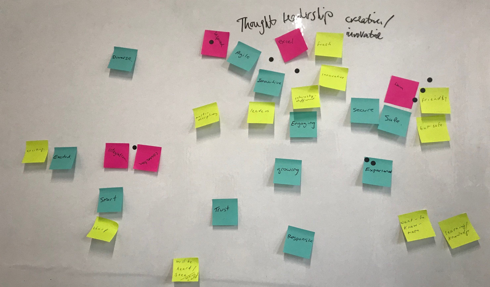

From the workshop to the style guide to everything in between, my approach covers every aspect of the design process.
Post-its and dot votes from a workshop with Align.
I've spent over 10 years as a designer and have seen almost any kind of situation you could think of. I've worked with national e-commerce giant Trade Me, various design agencies and many other product shops, each in different stages of their life cycle (see the details in my CV). If there's one thing I've learned: design needs to respond to the environment in which it lives or it dies a quick death.
What does that mean? My take is that design thinking, approaches and processes can't stagnate or be immovable. Design needs to adjust to the way the developers work, the business needs and the methods the target market approach the product with.
My perspective on design has shifted over the years. I used to think design's job was to make things look good and "feel nice." Now, however, I've come to realise that design's primary goal is to solve problems – business problems, usability problems, retention problems and, yes, visual problems too. Making things look nice is the last step in a wide ranging set of questions and decisions which help a designer find the solution needed.
Therefore, design needs to take a holistic approach and really understand the why before making any decisions. This is what I try to do and, hopefully, do it well.
© Andi Parker. All rights reserved.